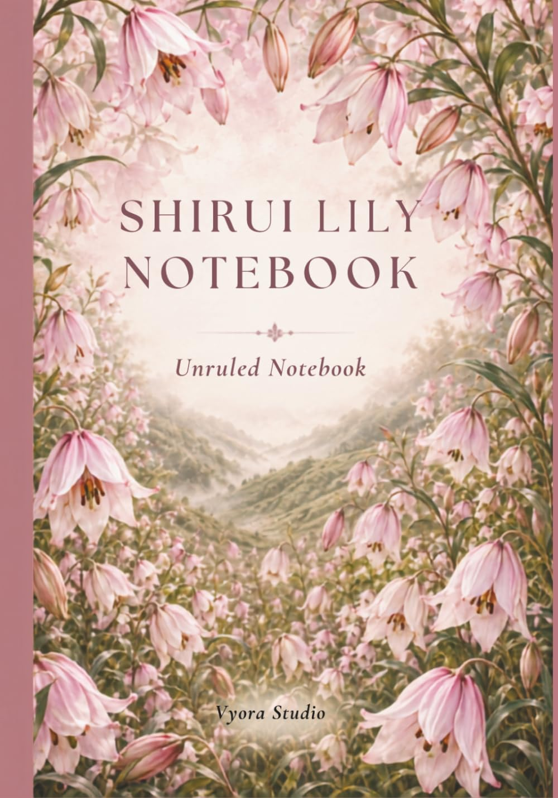
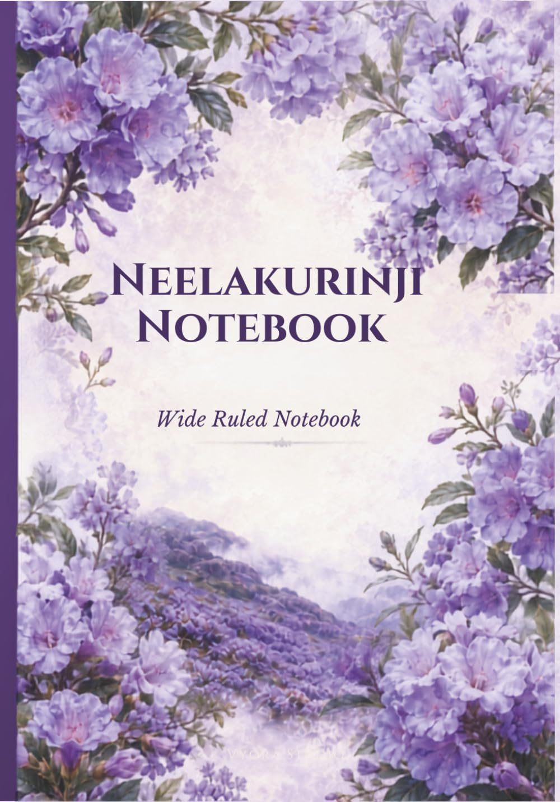

Stories From Elsewhere
The Fairy Chimneys of Cappadocia Notebook
A quiet notebook inspired by Cappadocia's sculpted valleys, ancient cave dwellings, volcanic hues, and dreamlike skies.
Explore on AmazonBooks
Thoughtfully designed notebooks inspired by rare flowers, remarkable creatures, and extraordinary places.
Vyora Studio
Stories From Elsewhere
A quiet notebook inspired by Cappadocia's sculpted valleys, ancient cave dwellings, volcanic hues, and dreamlike skies.
Explore on Amazon
Rare Flowers
A Vyora Studio notebook inspired by the delicate beauty and remarkable story of the Shirui Lily.
Explore on Amazon
Rare Flowers
A notebook inspired by the fleeting violet-blue bloom of the Western Ghats.
Explore on Amazon